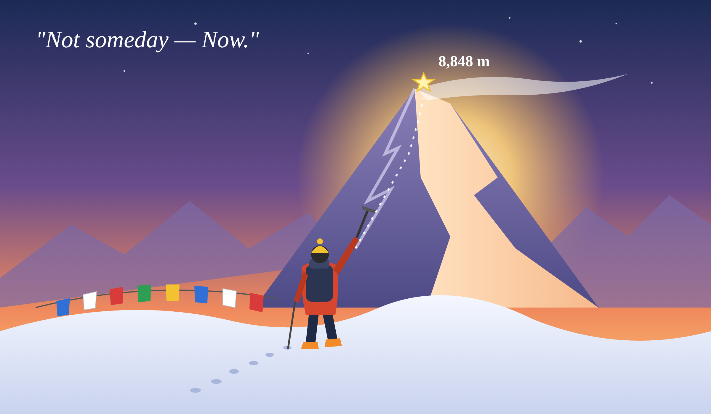

挑戦・チャレンジ
「いつか」ではなく「今」―18歳、エベレストへの挑戦

東京都国立市の高校3年生・田中秀太郎さん（18）は、エベレスト（8,848m）の日本人最年少登頂をめざし、19歳になる2027年5月の挑戦に向けて準備を進めている。高1の秋、20歳で当時の最年少登頂を果たした伊藤伴さんを動画で知り、「『いつか』では一生行かない」と期限を決め、本人にSNSで助言を求めたのが始まりだった。キリマンジャロやロブチェ・イーストに登頂し、富士山の反復登山や足に重りを付けた生活、山小屋での仕事で体と知識を鍛えている。
遠征費は親に頼らず、アルバイトや募金、クラウドファンディングで集め、応援の輪も広がっている。記事が最も伝えたいのは、登頂の成否以上に「目標に向かって努力し、周囲の助けを受ける過程そのもの」に価値があるという点だ。田中さんも自分の挑戦が誰かの励みになることを願う。
一方で専門家は、商業公募隊が増えた今、エベレストは「自分自身との挑戦」であり、体調を慎重に見極めるべきだと助言している。
（出典：The Japan News（読売新聞）記事「Tokyo teen aims to become youngest Japanese to summit Mt. Everest」をもとに要約）
筆者の主張のポイント
- 期限を決めて「今」動く：夢を「いつか」で終わらせない。
- 自分の力で道を切り開く：支える人の輪を広げる。
- 挑戦の価値は結果より「過程」：そして安全への冷静な判断を忘れない。